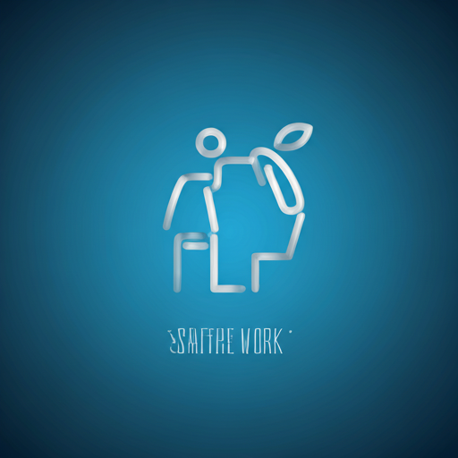

Çalışanlarınıza
değer katın
Ofis ortamında sadece 10 dakikada gerçekleştirilen, profesyonel terapistler eşliğinde sunulan kurumsal omurga terapisi ile verimliliği ve mutluluğu artırın.
10dk
Hızlı ve etkili uygulama süresi ile kesintisiz verimlilik.
Kurumsal Omurga Terapisi Nedir?
Corpoth, modern çalışma hayatının getirdiği fiziksel yükleri hafifletmek için tasarlanmış, klinik hassasiyette bir wellness çözümüdür. Kıyafetlerinizi çıkarmadan, sterilize edilmiş özel ekipmanlarla uygulanır.
Kıyafet Üstü
Soyunma gerektirmeyen, iş akışını bozmayan profesyonel uygulama.
Maksimum Hijyen
Her seans öncesi ve sonrası sterilize edilen tek kullanımlık ekipmanlar.
10 Dakika Seans
Öğle arası veya kahve molasına sığan hızlı tazelenme.
Bölgesel Odak
Boyun, omuz ve sırt bölgesindeki biriken stresi hedef alır.
Corpoth Kimler İçin?
Sağlıklı bir çalışma kültürü oluşturmak isteyen vizyoner kurumlar ve çalışanları için tasarlandı.
Masa Başı Çalışanlar
Uzun süre bilgisayar karşısında hareketsiz kalan, boyun ve bel ağrısı yaşayan profesyoneller.
İK Yöneticileri
Çalışan bağlılığını artırmak ve şirket kültürünü iyileştirmek isteyen insan kaynakları liderleri.
Vizyoner Şirketler
Modern yan haklar sunarak yetenekleri elde tutmak isteyen kurumsal yapılar.
Kurumsal Faydalar
Küçük bir mola, büyük bir değişim yaratır. Corpoth'un etkileri sadece fiziksel değil, zihinsel ve kurumsaldır.
Stres Azaltma
Zihinsel yorgunluğu giderir ve stres seviyesini anında minimize eder.
Enerji Artışı
Kan dolaşımını hızlandırarak vücuda taze bir enerji verir.
Konsantrasyon
Odaklanma süresini artırarak hata payını düşürür.
Ofis Atmosferi
Ofis içindeki pozitif iletişimi ve ekip ruhunu güçlendirir.
Nasıl Çalışır?
Sadece 4 adımda çalışanlarınızın enerjisini tazeliyoruz.
Hazırlık
Ekibimiz ofisinize uygun bir noktada mini istasyonunu kurar.
Analiz
Terapistimiz çalışanın postürünü ve ağrı noktalarını hızlıca analiz eder.
Uygulama
Kıyafet üstü, 10 dakikalık hedefe yönelik terapi uygulanır.
Dönüş
Çalışanınız zinde ve motive bir şekilde masasına döner.
Neden CORPOTH'u Seçmelisiniz?
-
task_alt
Pratik Çözümler
Ofis düzeninizi bozmadan, her mekana uyum sağlayan kurulum.
-
verified
Uzman Kadro
Sertifikalı ve kurumsal görgü kurallarına hakim terapistler.
-
diamond
Premium Deneyim
Çalışanlarınıza kendilerini gerçekten değerli hissettirecek kalite.

Kullanım Senaryoları
Corpoth sadece bir terapi değil, kurum içi iletişimin güçlü bir aracıdır.
Ekip Ödülleri
Özel Gün Hediyeleri
Kurumsal Etkinlikler
Genişletilmiş Esenlik
Ayrıca Yoga ve Nefes Terapisi seansları ile tam kapsamlı wellness desteği.
spaReferanslarımız